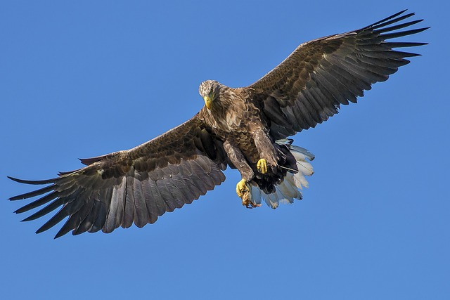
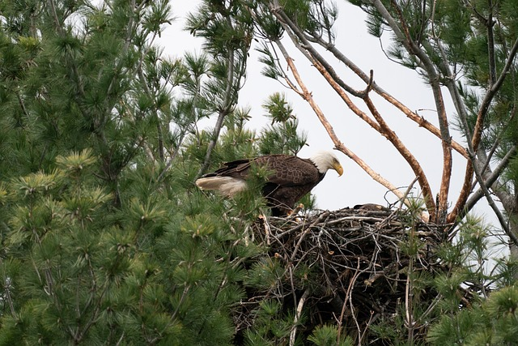
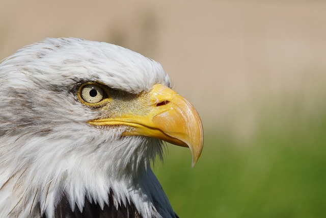
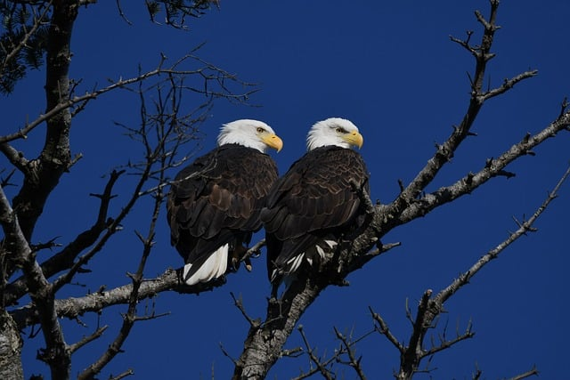
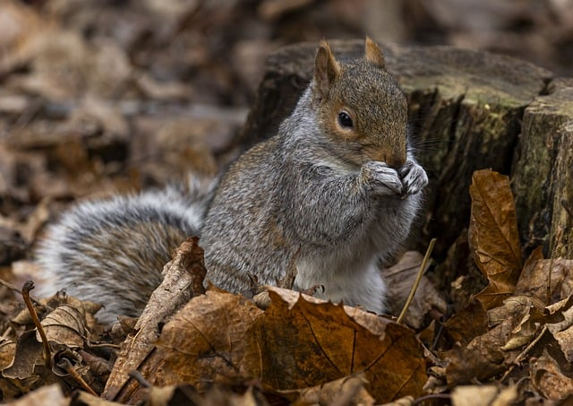
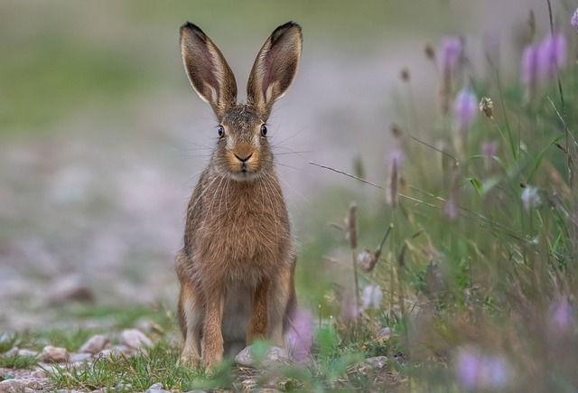
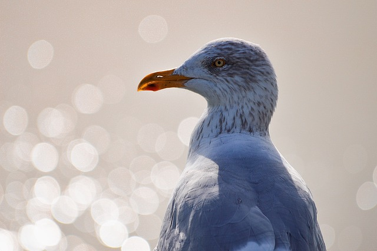
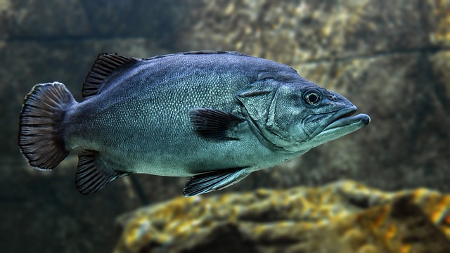

.jpg)
Introduction
The eagle is a majestic bird of prey known for its strength, keen eyesight, and graceful flight. It symbolizes power, freedom, and courage.
Its impressive wingspan and sharp talons make it a formidable predator in the skies. The eagle´s distinctive call echoes across vast landscapes, a testament to its presence and dominance in its habitat.
Facts about Eagles
-
Eagles have excellent eyesight, enabling them to spot prey from great distances.
 -
They build large nests called eyries in high places like cliffs or tall trees.
 -
Bald eagles are found only in North America.
 -
Eagles mate for life and often use the same nest year after year.

Prey
Eagles primarily hunt small mammals such as rabbits, squirrels, and rodents. They also prey on birds, fish, and occasionally larger mammals like deer. Their keen eyesight allows them to spot prey from high altitudes, and they use their powerful talons to catch and kill their victims.
Eagles are opportunistic hunters and will adapt their diet based on what is available in their habitat. They are apex predators in their ecosystems and play a crucial role in maintaining ecological balance.
   
Habitat and Range
Eagles are found on every continent except Antarctica. They typically inhabit mountainous or hilly regions with open spaces for hunting and tall trees for nesting.